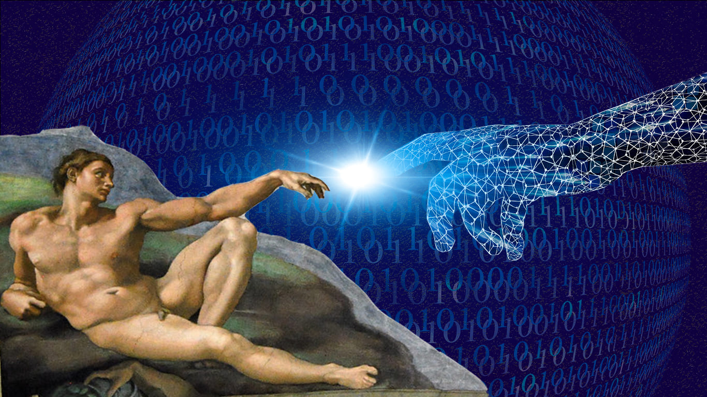

Trabajo audiovisual sobre los procesos de digitalización y su incidencia en las subjetividades, visto desde la ciudad de Río Cuarto.
IrEn los últimos años, se ha evidenciado una creciente implementación de herramientas digitales en múltiples aspectos de la vida cotidiana. Este proceso de digitalización no solo ha transformado la forma en que nos comunicamos o consumimos información, sino también cómo accedemos a servicios y ejercemos nuestros derechos como ciudadanos. Las nuevas tecnologías se han convertido en aliadas fundamentales para agilizar tareas, reducir costos operativos y facilitar el acceso a distintos trámites, mejorando la eficiencia tanto del Estado como de la ciudadanía en general. La pandemia de COVID-19 aceleró de forma notable este proceso. Las restricciones a la circulación y la necesidad de mantener el distanciamiento social llevaron a muchos organismos públicos a adaptar sus servicios a formatos virtuales. Así, con solo unos pocos clics, es posible hoy realizar desde trámites bancarios o médicos hasta gestiones legales y administrativas, sin necesidad de trasladarse físicamente ni hacer largas filas.
En la ciudad, EDECOM ha decidido no adherir al sistema de Licencia Nacional de Conducir Digital implementado por el Gobierno Nacional. Esta decisión se basa en la diferencia entre la Ley Nacional de Tránsito y Seguridad Vial N° 24.449 y la Ley Provincial de Tránsito N° 8.560, bajo la cual se regula la circulación en la ciudad y la provincia. A pesar de que la Licencia Nacional de Conducir Digital permite a los usuarios portar su licencia en formato digital a través de la aplicación Mi Argentina, el EDECOM ha optado por mantener el formato físico debido a las diferencias legislativas mencionadas. Esto significa que, en Río Cuarto, los conductores deben seguir utilizando la licencia de conducir en formato físico, ya que la versión digital no tiene validez oficial en la ciudad.

Video
Material audiovisual sobre la relación entre la digitalización de la licencia de conducir y el control de las subjetividades. Realizado por: Freytes, Salinas y Yaschelt.
Ver más
Informe
Byung-Chul Han, filósofo surcoreano, brinda la base teórica utilizada en esta investigación.
Ver más
Articulo
Investigación realizada por docentes de México: Beatriz Ramírez Grajeda y Raúl Enrique Anzaldúa Arce
Ver más